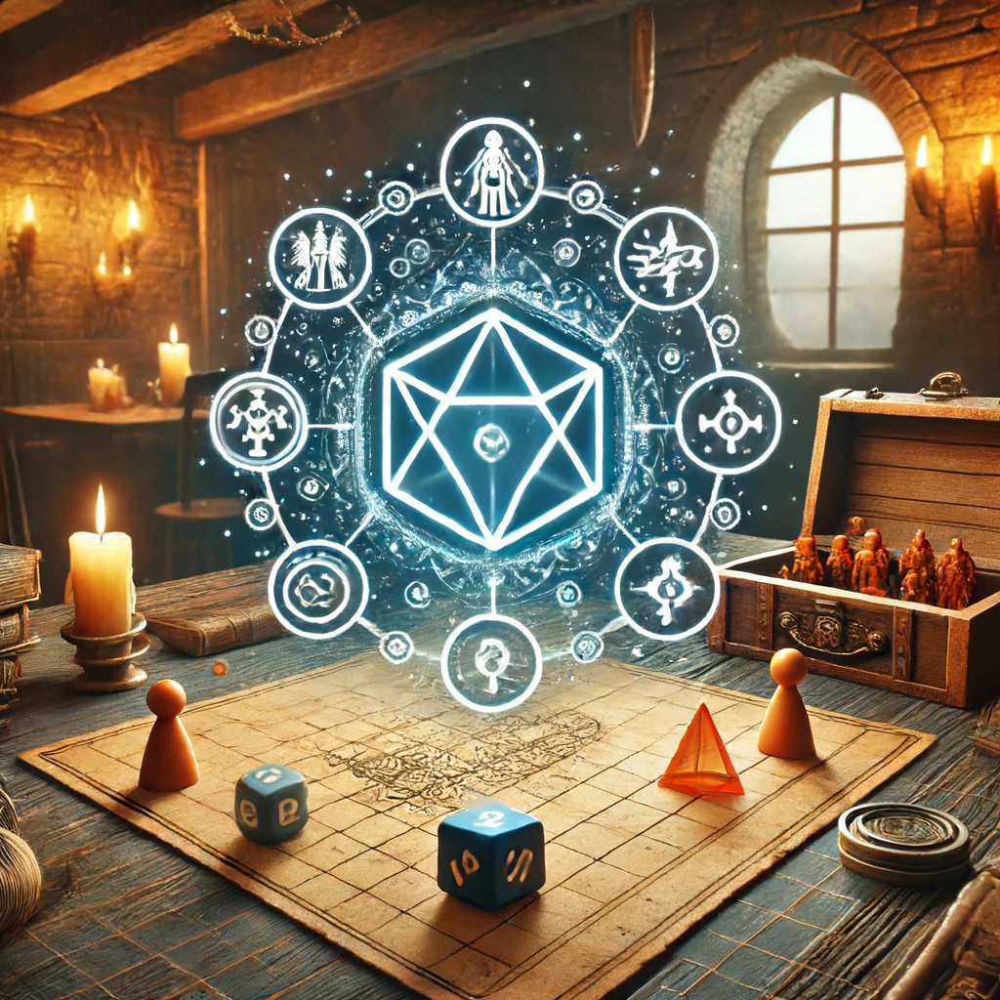

Virtueller Spieltisch
Erleben Sie interaktive Spieleabende
Unser virtueller Spieltisch bietet eine moderne und benutzerfreundliche Plattform für Ihre Spieleabende. Mit intuitiven Tools und ansprechendem Design machen wir es Ihnen leicht, tief in Ihre Abenteuer einzutauchen.
- Interaktive Karten: Nutzen Sie detaillierte und interaktive Karten, um Ihre Abenteuer zum Leben zu erwecken.
- Charakterblätter: Verwalten Sie Ihre Charaktere direkt im Spiel und behalten Sie jederzeit den Überblick über deren Fortschritte.
- Würfelsimulation: Nutzen Sie unsere präzisen Würfelsimulationen, um Spannung und Authentizität in Ihre Spiele zu bringen.
- Chat- und Sprachfunktionen: Kommunizieren Sie nahtlos mit Ihren Mitspielern und sorgen Sie für eine immersive Spielerfahrung.
- Notizen und Handouts: Teilen Sie Notizen und Handouts mit Ihren Mitspielern, um die Geschichte und das Spielgeschehen zu bereichern.
Nutzerbewertungen
"Der virtuelle Spieltisch von Tavern hat unsere Spieleabende revolutioniert. Noch nie war es so einfach und angenehm, online zu spielen."